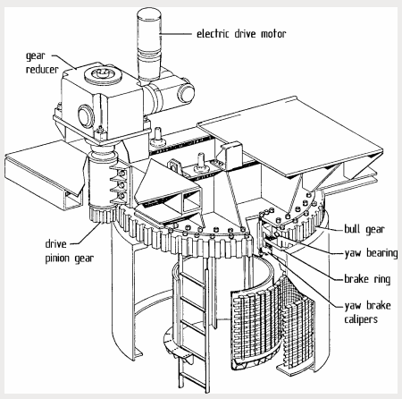

The following figures, taken from Wikipedia, show other solutions.
Yaw drive: orientation motor.
Yaw bearing: support bearing.
Brake caliper: brake shoe.
Gear rim: toothed ring where the motors mesh.